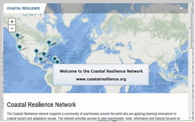
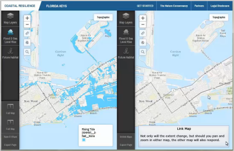
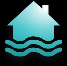

Coastal Resilience tutorials:
-

- Video 1: General Navigation
-
This is the first of three introductory videos on the basic navigation of the Coastal Resilience web mapping framework. Click on the thumbnail image to the left to Get Started.
- Video 2: Scenario Planning
-

-
This video continues with the basic navigation of the Coastal Resilience web mapping framework, covering split screen scenario planning, sharing and saving, and exporting. Click on the thumbnail image to the left to continue with the Get Started video series.
- Try Me: Flood & Sea Level Rise
-

-
Flooding is increasing along the coast and certain rivers. Use this app to view areas affected today and in the future due to increased sea level rise, surge from storms and hurricanes, and inland flooding.